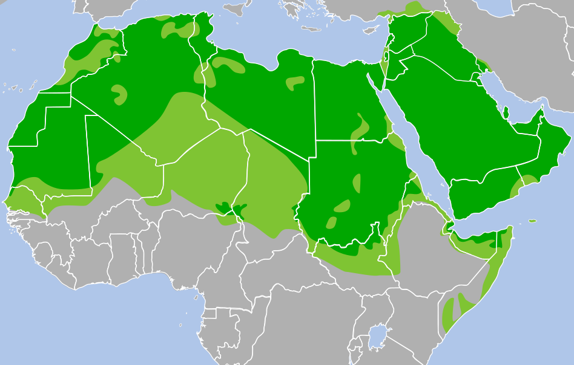

Debate: Resolução dos conflitos entre árabes e judeus
Escala do pensamento
💭 Pensamento
❓Questionamento
🗣️ Opinião
✊ Posicionamento
Como eu era antes do debate
Israel está buscando o convívio pacifico e foi invadido 🗣️
cometeu resposta desproporcional
Maomé deixou um legado de guerra: A jihad 💭
Morte aos Infiéis
Judeus e Islâmicos são diferentes 🗣️
Os judeus foram perseguidos durante a segunda guerra 🗣️
Sempre existiu guerra entre os Judeus e os palestinos 💭
A Igreja católica resignifica os costumes de outros povos 🗣️
Como estou depois
Árabe é a lingua
Idioma tem variações entre os povos e nações (como o espanhol na América Latina)

Fátima, a filha de Mamoé
Venerada pelos Islâmicos
Origem do nome da Cidade de Fátima em Portugal
Aparição de Fátima pode ter sido a filha de Maomé
Similaridades religiosas
Existe um Deus e ele está do meu lado
A minha religião é a única verdade
Bem vs o mal
Nós somos o povo escolhido
Lealdade e defesa do meu grupo religioso
Respostas às perguntas
Quanto eu defendo um grupo em detrimento de outro?
Antes: Eu avalio as ações pontuais que me são apresentadas.
Depois: Eu fui informado que Israel comete os mesmos erros de invasão que foram cometidos contra eles.
Qual é o meu nível de emocionalidade em relação ao conflito?
Antes:
Depois:
Quanto ainda estou condicionado pelas crenças e ideias do meu grupo sobre o outro grupo?
Antes:
Depois:
Sou pró-consciência ou pró-etnia?
Antes:
Depois: